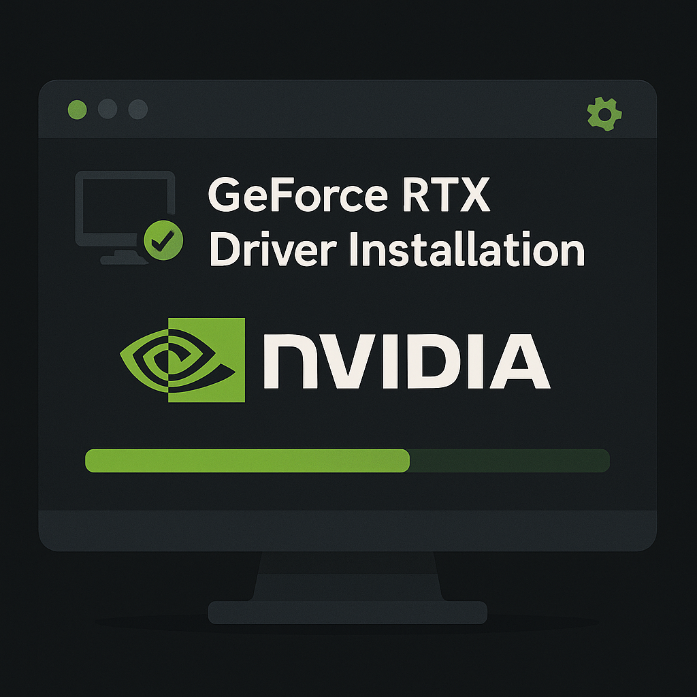
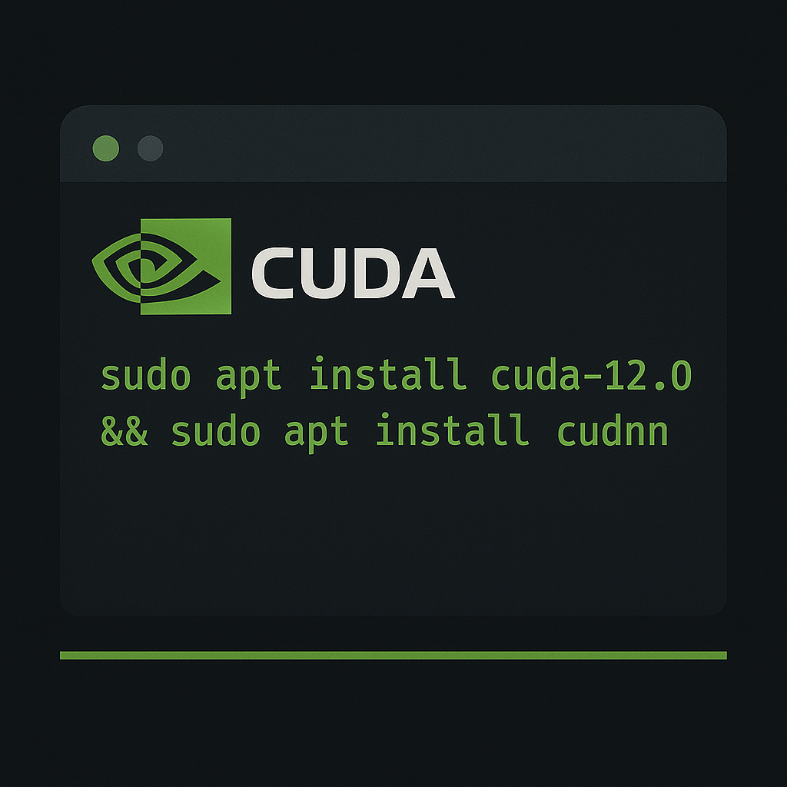

Getting Started with GeForce RTX Drivers
Step-by-step guide to download and install the latest NVIDIA GPU
drivers on Windows & Linux.

Installing CUDA Toolkit on Ubuntu 22.04
Detailed instructions for setting up CUDA Toolkit 12.0 and cuDNN on
Ubuntu for GPU-accelerated development.
Troubleshooting G-Sync Flicker
Common fixes for screen flickering when enabling G-Sync on NVIDIA
monitors with RTX GPUs.